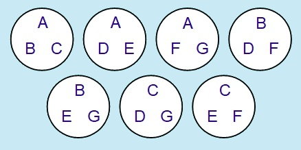
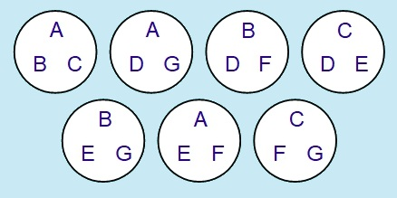
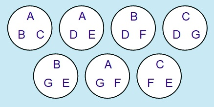

The Mathematics of Dobble
John Longley, University of EdinburghBack to main page
You may well have found a Level 3 Dobble system that’s different from mine. Here once again is my solution:
SOLUTION 1:

However, it’s possible that you came up with a solution like this:
SOLUTION 2:

On the face of it, these two solutions appear quite different: for instance, Solution 2 has a card containing A,D,G, while Solution does not. However, there’s a sense in which they are really all the same solution ‘in disguise’. For example, suppose we translate the symbols of Solution 2 into those of Solution 1 using the following ‘dictionary’:
A → A , B → B , C → C , D → D , E → G , F → F , G → E
This means that if I had come up with Solution 1 and you had come up with Solution 2, we could take the view that you were using E where I had used G, and vice versa, but that otherwise we had found the same solution. Let’s see what we get if we apply this translation to every symbol in Solution 2:

This still isn’t exactly Solution 1 – but it’s easy to see that just by rearranging the cards and repositioning the symbols within some of the cards, it can be brought into the exact form of Solution 1 above.
In mathematical terminology, we say two Dobble systems are isomorphic if we can transform one into the other by means of some translation of symbols (possibly combined with some rearrangement of cards and repositioning of symbols). In the case of Level 3 Dobble, it’s known that all 7-card solutions are isomorphic (and that 7 is the maximum possible number of cards).
Exercise: If you found some other solution that was different from my Solution 1, you might like to see if you can discover some translation of symbols that shows they are isomorphic.
Interestingly, there won’t be just a single translation that does this. For instance, we’ve already seen one dictionary that can be used to translate Solution 2 to Solution 1 – but here’s another dictionary that does the same job (try it!):
A → B , B → D , C → F , D → A , E → G , F → E , G → C
This is closely related to the fact that a Dobble system is isomorphic to itself in many different ways. For instance, it‘s obvious that we could ‘transform’ Solution 1 into itself using the boring translation that leaves every symbol just as it is:
A → A , B → B , C → C , D → D , E → E , F → F , G → G
But there are other ways to do it. Here is one of them:
A → B , B → D , C → F , D → A , E → C , F → E , G → G
This is actually what you get if you start from Solution 1, use the first of the above translations (in reverse) to get to Solution 2, then use the second translation to get back to Solution 1 again. You might like to check directly that if we apply this translation to Solution 1, we do indeed get Solution 1 again (after a bit of rearrangement and repositioning).
Translations that can be used to transform a Dobble system into itself are especially interesting, and are known as symmetries of the system. (The more technical term collineations is also used in this context.) One of the most beautiful things about Dobble systems is the very high degree of symmetry they tend to possess. For instance, our Level 3 Dobble system (which, as we’ve seen, is in essence the only one possible with 7 cards) has no fewer than 168 different symmetries. In mathematical jargon, these 168 symmetries form a well-known example of a group – a beautiful mathematical structure in its own right. (We’ll say more about these groups later when we look at symmetries of Dobble systems in more detail.)
[Return to main page.]